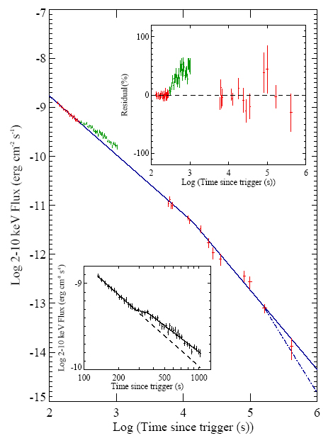

| |
Gamma-ray burst afterglow modelling
The CASt dataset
GRB_afterglow.dat
Astronomical background
Gamma-ray bursts (GRBs) are among the most exotic phenomena studied in modern astronomy. Discovered serendipitously in the 1960s by U.S. and Soviet nuclear test ban verification satellites, they appeared to be explosive bursts of gamma-ray emission lasting from 0.1-100 seconds arising from random locations in the sky. After decades of hypotheses regarding their origin, the "relativistic fireball model" for GRBs emerged in the mid-1990s as the leading contender. Here, GRBs are viewed as secondary phenomena arising during the birth of black holes. In one scenario associated with long-duration GRBs, a massive supergiant ejects a beam of energetic material at relativistic (near the speed of light) velocities during its final collapse and supernova explosion. In another scenario associated with short-duration GRBs, two neutron stars spiral inwards towards each other (due to the emission of yet-undetected gravitational radiation) and merge into a black hole, again ejecting a relativistic jet.
As the jet expands and cools, astrophysical calculations predicted that "afterglow" radiation at longer-wavelengths -- in the X-ray, visible and radio bands -- should be detected and should decay on timescales of hours-days-weeks. This prediction was published by Meszaros and Rees in February 1997 and the X-ray/optical/radio afterglow of GRB 970228 (GRB detected on February 28 1997) was fortuitously discovered immediately afterward. Since then, hundreds of detailed studies have vindicated the basic formulation of the relativistic fireball model.
NASA's Swift satellite was specifically designed to pinpoint GRBs immediately after the burst is detected in gamma-rays, and measure X-ray and optical afterglow decay. A surprising variety of behaviors are seen. The predicted "break", or steepening in the rate of afterglow decay, is often seen and serves to constrain parameters of the astrophysical model. But some afterglows also exhibit unexpected X-ray "flares" of uncertain origin ... perhaps the birth of black holes is a messy process that includes splatter and fallback.
Dataset
We give here the X-ray decay "light curve" (or time series) of GRB 050525a obtained with the X-Ray Telescope (XRT) on board the Swift satellite (A. J. Blustin and 64 coauthors, Astrophys. J. 637, 901-913 2006. Available at
http://arxiv.org/abs/astro-ph/0507515). The dataset has 63 brightness measurements in the 0.4-4.5 keV spectral band at times ranging from 2 minutes to 5 days after the burst. During this period, the brightness faded by a factor of 100,000. Due to the wide range in times and brightnesses, most analysis is done using logrithmic variables. Most models are based on linear regression in the logrithmic variables giving decay laws of the form Flux ~ Timealpha where alpha<0. The columns in the dataset are: time of observation (in seconds), X-ray flux (in units of 10-11 erg/cm2/s, 2-10 keV), and measurement error of the flux based on detector signal-to-noise values.
The data and best-fit model are shown in the plot below (Fig. 3 from Blustin et al.). The top inset shows residuals before the "flare" component added is added, and the bottom inset shows the model with the "flare" component. We then quote from Blustin et al. where they describe their model fitting procedure and results.

"The X–ray afterglow of GRB 050525 is clearly fading.
The early afterglow decay was first fitted with a single power-law model, resulting in a best
fit decay index alpha = -0.95 +/- 0.03, with chisqr = 1.17 (42 dof). Inspection of the residuals to
the best fit model suggests that a flattening of the decay curve or a re-brightening of the
source occurs at ~300 seconds after the trigger. A better fit is provided by a broken power
law model with slopes alpha1, alpha2 and a break at tb. This model gave chisqr = 0.98 (40 dof), with best fit parameters alpha1 = -1.23 (+0.03,-0.02), alpha2 = -0.91 and tb = 203 s.
"Again, however, the residuals suggest systematic deviations from this model. We thus
tried a broken power law with two temporal breaks. This model provided a very good fit to the data, with chisqr = 0.72 (38 dof) and is plotted in Figure 3 (inset) as a solid line. The best
fit parameters are alpha1 = -1.19, t1b = 282 s, alpha2 = -0.30, t2b = 359 s, and alpha_3 = .1.02.
"Next, we fitted the X–ray data taken in PC mode at times more than 5000 s after
the trigger. We first used a single power-law model, obtaining a best fit decay index alpha = -1.51 +/- 0.07, with chisqr = 1.40 (12 dof). The poor fit is the result of a clear steepening of
the light curve with time. We thus tried a broken power law model. The model provided a very good fit with chisqr = 0.97 (10 dof) and best fit parameters alpha1 = -1.16, alpha2 = -1.62 and
tb = 13177 s.
"Finally, we tried fitting the total light curve derived from the combined PD and PC
mode data (see Figure 3). We find that the power law fit to the pre-brightening PD mode
data (T.lt.280 s) extrapolates well to the pre-break PC mode data. Moreover the decay index
before 280 s agrees well with that of the PC mode data before the 13ks break. In contrast,
if we extrapolate the post brightening PD mode data to later times using the best fit slope,
a significant excess is predicted compared with the measured PC mode data. To join the
post brightening PD mode data to the PC mode data requires a model with at least two
temporal breaks, which are not constrained because of the intervening gap in X-ray coverage.
We conclude that the brightening at about 280 s in the PD mode data represents a flare in
the X-ray flux, possibly similar to the sometimes much larger flares that are seen at early
times in other bursts (Burrows et al 2005b; Piro et al. 2005), and that the flux returns to
the pre-flare decay curve prior to the start of our PC mode data.
We thus fit the combined PD and PC mode data excluding PD data at times t >T+288 s
(green points in Figure 3). A broken power law model provided a good fit (solid line of
Figure 3), with with chisqr = 0.50 (25 dof) and best fit parameters alpha1 = -1.20 +/- 0.03, alpha2 = -1.62 (+0.11,-0.16) and tb = 13726 (+7469,-5123) s. The break time is thus ~3.8 hours."
Statistical exercises
- Recover the results of Blustin using least squares methods. Test sensitivity to method (LS vs. MLE vs. robust) and heteroscedastic weightings. Estimate best-fit parameters and their confidence intervals.
- Proceed with similar modelling effort using different model selection techniques and criteria including: F test and likelihood ratio test; Akaike Information Criterion and other penalized likelihoods; Bayesian decision theory including marginalization over uninteresting parameters. Determine the most parsimonious model and evaluate the confidence intervals of the break and flare parameters.
|